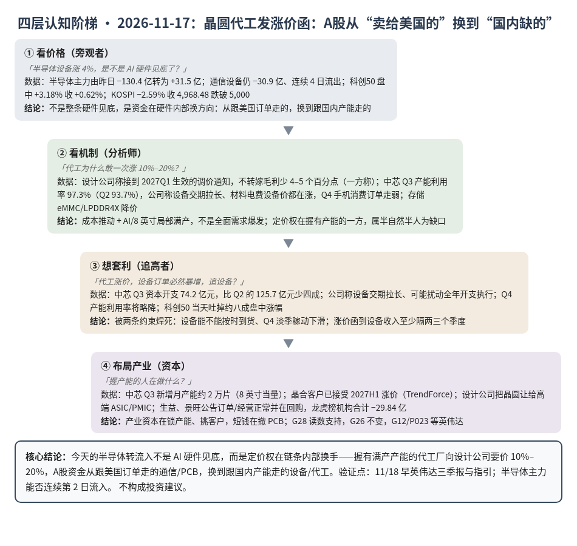
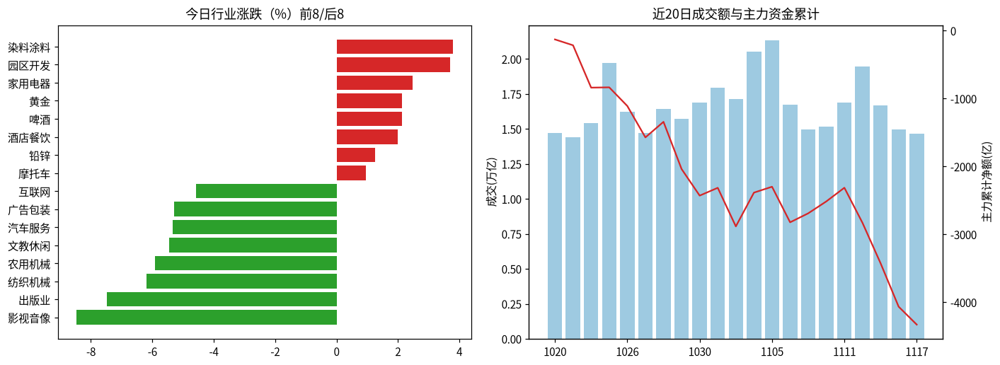
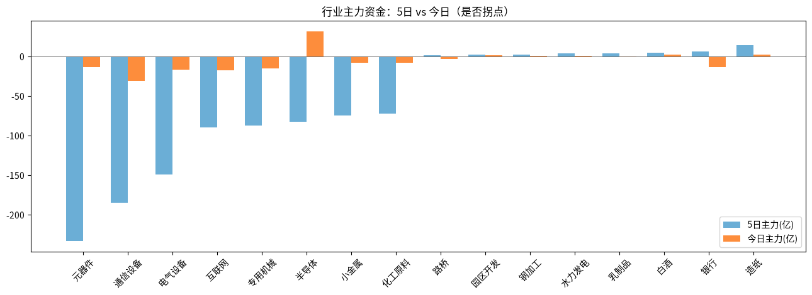

A股投研日报 · 2026-11-17（四层认知版）
- 主线
- 代工发涨价函，A股资金从“卖给美国的”换到“国内缺的”产能
- 最重要变化点
- 半导体主力由昨日 −130.4 亿转为 +31.5 亿，通信设备连续 4 日流出；创业板 −1.20% 收 2,292.20
- 机制含义
- 定价权在链条内部换手：握满产产能的代工向设计公司加价 10%–20%，不是需求全面回暖
- 下一个观察点
- 11/18 早 5 点后英伟达三季报：营收是否 ≥1,087 亿美元、四季度指引与资本开支表述
本报告为基于公开数据的研究分析，不构成投资建议。
方法：四层认知阶梯 + 历史周期律。数据 Tushare（见附录）。不构成投资建议。
今日市场概况
上证 −0.50% 收 3,584.58，跌破 3,600；创业板 −1.20% 收 2,292.20；只有科创50 +0.62% 收红。成交 14,675 亿元，低于 20 日均 16,798 亿元；上涨家数只占 23.8%。全 A 主力 −264.0 亿元，连续第 4 日流出，但比昨天的 −640.0 亿元少了六成。流入居前：半导体 +31.5 亿、家电 +7.7 亿、黄金 +4.4 亿；流出居前：通信设备 −30.9 亿、影视 −26.6 亿、互联网 −17.9 亿（Tushare）。海外：美债 10 年期 11/16 纽约尾盘 5.11%（源）；KOSPI −2.59% 收 4,968.48，九个月来首次跌破 5,000，外资净卖 1.44 万亿韩元（源）；DDR5 16Gb 现货 60.33 美元，11/17 持平（源）。
变化点
世界观定位：阶段不变（三国→楚汉过渡带），回退条件不变。今天三国层（产能）给出硬读数，楚汉层（5% 以上的美债、韩股破 5,000）继续压估值。世界指标今日天气：整体多云：钱开始变紧、股市偏贵偏热、AI 链有裂缝、中国经济还没回暖，留意。本周变化：③「股市贵不贵、热不热」🔴→🟡（美国保证金债务同比 +31.4%→+22.4%）。新的预警：美股恐慌指标 VIX/VIX3M 11/16 升到 0.995，贴近 1.00 危险线（短期恐慌快追上远期），美债波动率 MOVE 101.3 越过警戒线——压力在金融层扩散，还没传到实物（DDR5、韩国出口仍绿）。
和昨天、上周比：昨天是整条硬件一起被卖（半导体、元器件、通信合计流出 318.7 亿）；今天第一次分叉——半导体转流入，通信设备、元器件还在流出。上周二（11/10）全 A 主力 +175.5 亿、上涨占比 76.7%，一周之内情绪从普涨变成连续 4 天净流出，创业板 5 日 −8.11%。11/13 的验证点里，「11/16 硬件继续流出」「10Y 守 5%」命中，DDR5 未破阈值，英伟达财报待今夜。
看价格：「设备涨 4%，AI 硬件见底了？」没有。8 只半导体设备 ETF 全涨，但科创50 盘中 +3.18% 收 +0.62%，吐掉约八成（源）；PCB 龙头生益、景旺三天累计跌幅偏离超 20%，龙虎榜机构合计 −29.84 亿元。
看机制：「代工凭什么一次涨 10%–20%？」芯片设计业者称已接到含台积电在内的调价通知，2027 年一季度生效，不转嫁毛利少 4–5 个百分点（一方称，源）。中芯三季度产能利用率 97.3%（上季 93.7%），公司称设备交期拉长、材料电费和设备价格都在涨，但四季度手机和部分消费订单走弱（公司称，源）；同日存储 eMMC、LPDDR4X 还在降价（源）。推断这是“成本推动 + AI 和 8 英寸局部满产”，不是全面需求回暖；缺口一半是自然的（扩产以年计），一半是人为的（报价可谈），4 月前设计公司能否转嫁是关键。风险敞口接口：复核后有效断供 Δ$≈0。
想套利：「代工涨价→设备订单暴增→追设备」被两条约束卡住：中芯三季度资本开支 74.2 亿元，比二季度少四成，公司称设备交付不确定可能扰动全年开支；四季度稼动率将略降。涨价函变成设备收入，至少隔两三个季度。
布局产业：握产能的人在锁客户：晶合客户已接受 2027 上半年涨价（源）；设计公司把晶圆让给高端 ASIC。G28（设备交期到 2028 仍紧）读数支持；生益称订单饱满、回购在做，G26 不变。
判断：今天变的不是“AI 硬件好不好”，而是“谁握着稀缺产能谁定价”。
中长期展望（3–12 个月与 2027）
3–12 个月：「钱紧」「AI 链有裂缝」两问仍黄；涨价在 2027 年一季度落地，利润从设计端流向代工和设备（G28）。
2027：P023（四大云 2027 开支 ≥8,500 亿美元）仍是总闸门；G26 的“两种行情”在代工端同样出现。
什么会改变展望：①英伟达下修指引或客户融资承诺（G12、P023 复核）；②设计公司 4 月前转嫁失败、代工撤回涨价；③DDR5 现货单周跌超 3%。
七、明日/本周验证点（可证伪）
- 11/18 英伟达三季报营收 ≥1,087 亿美元（一致预期，源）且不下修开支表述；否则 G12、P023 交 John 复核。
- 11/18 半导体主力连续第 2 日净流入；转回流出则今天只是超跌反弹。
- 本周（至 11/20）中芯、华虹任一家公开确认 2027 年调价；明确否认则国内段证伪。
- 本周 DDR5 16Gb 现货跌破 58.52 美元（较 60.33 跌 3%）。
附录 A：机会表、检查清单、验证点回顾、风险复核
机会表（产业/环节层面，不构成投资建议）
| 环节 | 变化信号 | 认知层级 | 关键风险 / 证伪 |
|---|---|---|---|
| 成熟制程与 8 英寸代工 | 调价通知 10%–20%（一方称）；中芯稼动率 97.3% | 第 2→4 层 | 4 月前设计公司转嫁失败、代工撤回涨价 |
| 国产半导体设备 | 设备交期拉长、国产替代 | 第 3 层：待验证 | 中芯等资本开支执行继续下滑；涨价函到设备收入有两三个季度时滞 |
| 追涨 PCB / 光模块反弹 | 陷阱：机构龙虎榜 −29.84 亿，通信设备连续 4 日流出 | 第 1 层 | 英伟达指引上修且硬件主力连续流入 |
检查清单应用
- 缺口性质：半自然半人为。产能扩张以年计（自然）；报价幅度可谈、四季度消费端走弱（人为、可反转）。
- 替代弹性：低端芯片客户以“大陆代工未涨价”压价（一方称），说明成熟制程存在跨区替代；高端 ASIC 与先进制程替代弹性低。
- 领先 vs 滞后：领先＝调价通知、稼动率、设备交期、晶合/华虹报价、主力资金；滞后＝2027Q1 毛利率、设备公司收入确认、股价。
上一交易日验证点回顾（11/13 → 11/17）
| # | 验证点 | 读数 | 判定 |
|---|---|---|---|
| 1 | 11/17 英伟达三季报是否下修开支/融资承诺 | 美东 11/17 盘后发布（北京 11/18 约 05:20） | 待验证 |
| 2 | 11/16 三大硬件主力继续净流出 | 半导体 −130.4、元器件 −99.6、通信 −88.7 亿；11/17 半导体转 +31.5 亿 | 命中 |
| 3 | 11/16–11/17 美债 10Y 收在 5.00% 以上 | 11/16 纽约尾盘 5.11%；11/17 未收盘 | 命中（11/16） |
| 4 | 本周 DDR5 16Gb 跌破 58.42 美元 | 60.33（11/16），11/17 持平 | 未触发 |
供应链风险敞口（人工复核版）：脚本版见 risk_section_20261117.md。口径为 GB300/NVL72 当量柜年化系统价值；Δ$ 为事件类型假设模板，仅用于排序，非预测。脚本 2 条，误匹配 2 条。复核后今日有效断供 Δ$≈0，基线维持年化 EL 57.7 亿美元（10/21）。采集降级：GDELT 限流或 0 篇；巨潮公告匹配未恢复。
11/16 说明：11/16 只完成取数（11/17 11:07 补跑），未出正文与 PDF；本报以 11/16 数据作“昨天”对比。
世界指标数据说明：今晚 update.py 数据源 14/15 成功；Tushare 源因“IP 数量超限”失败，A 股融资余额、中国 PMI 沿用 11/13 读数（与日报取数同时运行导致并发超限）。

一句话总结：代工涨价函：定价权在链条内部换手，A股资金从“卖给美国的”换到“国内缺的”。
本报告为基于公开数据的研究分析，不构成任何投资建议。
附录：市场数据（证据底稿）


| 收盘 | 今日% | 5日% | 20日% | MA20 | 成交(亿) | |
|---|---|---|---|---|---|---|
| 上证指数 | 3,584.58 | -0.50 | -2.16 | -4.04 | 3,654.66 | 6,905.15 |
| 深证成指 | 10,638.52 | -0.49 | -5.36 | -9.85 | 11,205.19 | 3,914.79 |
| 创业板指 | 2,292.20 | -1.20 | -8.11 | -16.32 | 2,510.40 | 1,570.60 |
| 科创50 | 1,221.19 | 0.62 | -3.47 | -9.03 | 1,261.73 | 967.84 |
| 上证50 | 2,768.36 | 0.06 | -0.17 | 0.09 | 2,767.54 | 1,230.98 |
| 沪深300 | 3,976.46 | -0.08 | -2.04 | -4.23 | 4,051.00 | 4,094.77 |
| 中证500 | 6,283.01 | -0.23 | -5.46 | -8.16 | 6,559.89 | 2,593.36 |
| 中证1000 | 6,092.39 | -1.17 | -7.40 | -9.97 | 6,469.39 | 2,832.13 |
行业资金热力（按5日主力净额排序，前8/后8）
| industry | 今日% | 5日% | 20日% | 今日主力(亿) | 5日主力(亿) | 资金连续天数 |
|---|---|---|---|---|---|---|
| 造纸 | -1.8 | -9.7 | -2.4 | 1.8 | 13.8 | 12.0 |
| 银行 | 0.3 | 3.6 | 5.4 | -13.7 | 5.8 | -1.0 |
| 白酒 | -0.6 | 0.9 | 10.3 | 2.4 | 4.5 | 3.0 |
| 乳制品 | -1.3 | -1.4 | 10.0 | -1.0 | 3.8 | -1.0 |
| 水力发电 | 0.2 | 1.5 | -1.1 | 0.3 | 3.6 | 4.0 |
| 钢加工 | -0.8 | -1.6 | 13.7 | 1.0 | 2.2 | 1.0 |
| 园区开发 | 3.7 | 4.5 | -0.3 | 1.1 | 2.0 | 1.0 |
| 路桥 | 0.2 | 2.7 | 22.2 | -3.7 | 1.2 | -1.0 |
| 元器件 | -1.4 | -10.9 | -17.5 | -14.1 | -233.1 | -4.0 |
| 通信设备 | -2.7 | -10.1 | -29.8 | -30.9 | -184.9 | -4.0 |
| 电气设备 | -1.6 | -8.5 | -4.7 | -16.7 | -149.1 | -5.0 |
| 互联网 | -4.6 | -10.7 | 0.5 | -17.9 | -90.1 | -5.0 |
| 专用机械 | -3.0 | -11.8 | -7.5 | -15.3 | -87.5 | -4.0 |
| 半导体 | 0.9 | -3.5 | -2.3 | 31.5 | -82.8 | 1.0 |
| 小金属 | -1.4 | -9.8 | -8.4 | -8.1 | -75.0 | -4.0 |
| 化工原料 | -0.3 | -7.1 | -4.6 | -8.2 | -72.2 | -8.0 |
市场情绪时间序列（近10日）
| trade_date | 成交(亿) | 上涨占比% | 主力净额(亿) | 个股中位涨跌% |
|---|---|---|---|---|
| 20261104 | 20518.9 | 83.8 | 497.2 | 1.9 |
| 20261105 | 21351.0 | 87.4 | 86.9 | 2.0 |
| 20261106 | 16716.0 | 13.6 | -524.0 | -1.9 |
| 20261109 | 14945.5 | 40.2 | 132.1 | -0.3 |
| 20261110 | 15167.5 | 76.7 | 175.5 | 1.3 |
| 20261111 | 16886.9 | 63.5 | 201.5 | 0.6 |
| 20261112 | 19458.7 | 15.7 | -516.5 | -1.6 |
| 20261113 | 16670.7 | 13.7 | -595.2 | -2.0 |
| 20261116 | 14941.6 | 20.4 | -640.0 | -2.1 |
| 20261117 | 14675.2 | 23.8 | -264.0 | -1.3 |
今日上涨1326家/下跌4119家，涨幅≥9.8% 51家、跌幅≤-9.8% 110家¹。
龙虎榜侧写：机构专用席位合计 -29.84 亿；净买入居前 凡拓数创(+1.97亿)、锋龙股份(+1.31亿)、襄阳轴承(+0.55亿)，净卖出居前 景旺电子(-12.57亿)、生益科技(-7.00亿)、翱捷科技(-3.75亿)。 沪深股通活跃股：成交前五为中际旭创、寒武纪、宁德时代、新易盛、北方华创（成交额≠净买入）。
注：¹涨跌停为按±9.8%阈值近似（limit_list_d无权限）。²行业为Tushare stock_basic分类自行聚合（sw_daily/ths_daily/行业资金流接口无权限），成交加权、剔除N/C新股，成分≥8只。³主力=大单+特大单净额（moneyflow）。⁴2024年8月起北向每日净买入停止披露，moneyflow_hsgt/hsgt_top10数值为成交口径，不可解读为净流入。⁵新闻/公告接口无权限，改用新浪财经7x24公开快讯自动抓取+人工补充。
接口状态：trade_cal:OK；stock_basic:OK；index_daily:OK；moneyflow_hsgt:OK；hsgt_top10:OK；top_list:OK；top_inst:OK；index_dailybasic:OK；新浪7x24(公开):OK 2997条（11-16 14:32 起）